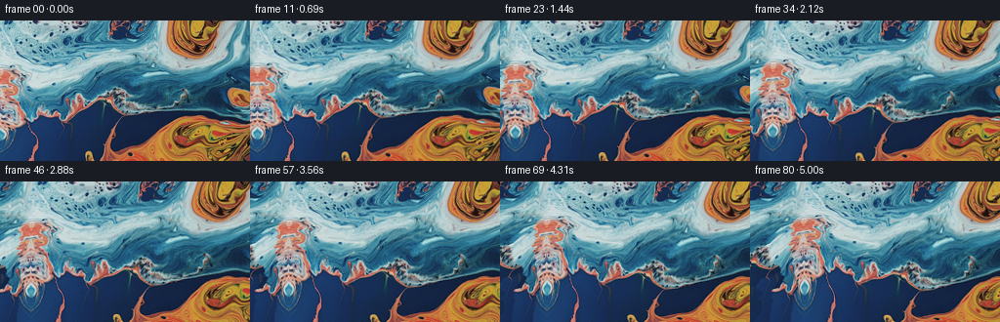
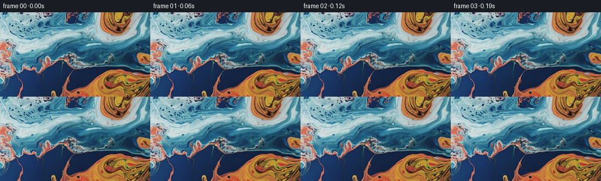

CODING AGENTS AS PIXEL WORLD MODELS
traex/GPT-6.1-Sol · 0001_s1
点击播放 · 原生 RGB 像素
逐轮保存的候选
回放视频、检查图与代码变化。
每份候选均可单独播放。实际图片检查记录在下方工具轨迹中。
候选 01播放与检查图
点击播放 · 原生 RGB 像素


展开代码变化
--- 上一保存版本
+++ 本次保存版本
@@ -0,0 +1,148 @@
+"""Deterministic, source-pixel macro liquid animation and leftward camera pan."""
+from pathlib import Path
+
+import cv2
+import numpy as np
+from PIL import Image
+
+import artifact_io
+
+
+ROOT = Path(__file__).resolve().parent
+
+
+def vertical_cut(error):
+ """Minimum-cost connected seam, one column per row."""
+ h, w = error.shape
+ cost = error.copy()
+ back = np.zeros((h, w), np.int32)
+ for row in range(1, h):
+ prev = np.pad(cost[row - 1], (1, 1), constant_values=1e20)
+ alternatives = np.stack((prev[:-2], prev[1:-1], prev[2:]))
+ best = alternatives.argmin(axis=0)
+ cost[row] += alternatives[best, np.arange(w)]
+ back[row] = np.arange(w) + best - 1
+ seam = np.zeros(h, np.int32)
+ seam[-1] = cost[-1].argmin()
+ for row in range(h - 1, 0, -1):
+ seam[row - 1] = back[row, seam[row]]
+ return seam
+
+
+def extend_left(image, margin=88):
+ """Source-only texture quilting, with an untouched original image region.
+
+ The initial narrow reflected boundary is a continuous edge condition. The
+ remaining exposed area is quilted from locally color-matched source pixels;
+ minimum-error seams keep sharp capillary glints instead of cross-fading them.
+ """
+ h, w = image.shape[:2]
+ canvas = np.pad(image, ((0, 0), (margin, 0), (0, 0)), mode="reflect")
+ p, step, overlap = 40, 24, 16
+ ys = list(range(0, h - p + 1, step))
+ if ys[-1] != h - p:
+ ys.append(h - p)
+ rng = np.random.default_rng(14)
+ for x in (margin - 40, margin - 64, margin - 88):
+ previous_end = 0
+ for y in ys:
+ target = canvas[y:y + p, x:x + p].astype(np.float32)
+ top_overlap = max(0, previous_end - y)
+ source_ys = np.arange(max(0, y - 16), min(h - p, y + 16) + 1, 2)
+ if not len(source_ys):
+ source_ys = np.array([min(y, h - p)])
+ positions = [(sy, sx) for sy in source_ys for sx in range(0, 145, 2)]
+ candidates = np.stack([image[sy:sy+p, sx:sx+p] for sy, sx in positions]).astype(np.float32)
+ right_diff = candidates[:, :, -overlap:] - target[None, :, -overlap:]
+ scores = np.mean(right_diff * right_diff, axis=(1, 2, 3))
+ if top_overlap:
+ top_diff = candidates[:, :top_overlap, :p-overlap] - target[None, :top_overlap, :p-overlap]
+ scores += .85 * np.mean(top_diff * top_diff, axis=(1, 2, 3))
+ # Favor nearby depths so the dark blue and warm strata continue.
+ scores += np.array([abs(sy-y) * 2.0 for sy, sx in positions])
+ near = np.flatnonzero(scores <= scores.min() * 1.025 + 1.0)
+ selected = int(rng.choice(near))
+ patch = candidates[selected]
+ error = np.mean((patch - target) ** 2, axis=2)
+ right_seam = vertical_cut(error[:, -overlap:]) + p - overlap
+ xx = np.arange(p)[None, :]
+ alpha = np.clip((right_seam[:, None] - xx + .5) / 1.5 + .5, 0, 1)
+ if top_overlap:
+ top_seam = vertical_cut(error[:top_overlap].T)
+ yy = np.arange(p)[:, None]
+ alpha *= np.clip((yy - top_seam[None, :] + .5) / 1.5 + .5, 0, 1)
+ canvas[y:y+p, x:x+p] = np.clip(
+ patch * alpha[..., None] + target * (1-alpha[..., None]), 0, 255
+ ).astype(np.uint8)
+ previous_end = y + p
+ canvas[:, margin:] = image
+ return canvas
+
+
+def velocity(x, y, t):
+ """Gentle large-scale eddies and traveling capillary disturbances, px/s."""
+ u = .52 * np.cos(x / 43 + y / 68 - .31 * t)
+ v = -.82 * np.sin(x / 43 + y / 68 - .31 * t)
+ u += .38 * np.cos(x / 64 - y / 35 + .27 * t + 1.3)
+ v += .21 * np.cos(x / 64 - y / 35 + .27 * t + 1.3)
+ # Localized differential rotations: large orange pools and the blue channel.
+ for cx, cy, radius, omega in ((48, 57, 46, .078),
+ (193, 118, 55, -.071),
+ (189, 18, 35, .059),
+ (-25, 76, 42, -.055)):
+ dx, dy = x - cx, y - cy
+ swirl = omega * np.exp(-(dx*dx + dy*dy) / (2*radius*radius))
+ u -= dy * swirl
+ v += dx * swirl
+ # Small ripples ride on the main fluid movement, not independent pixel noise.
+ u += .18 * np.sin(x / 10.5 + y / 16 - .95 * t)
+ v += .16 * np.cos(x / 15.5 - y / 12 + .72 * t)
+ # No vertical border reconstruction is exposed during the horizontal pan.
+ edge = np.clip(np.sin(np.pi * np.clip(y, 0, 143) / 143), 0, 1)
+ v *= edge ** .65
+ return u, v
+
+
+def generate():
+ source = np.asarray(Image.open(ROOT / 'first_frame.png').convert('RGB'))
+ assert source.shape == (144, 256, 3)
+ margin = 88
+ extended = extend_left(source, margin)
+ Image.fromarray(extended).save(ROOT / 'extended_texture.png')
+ yy, xx = np.mgrid[:144, :256].astype(np.float32)
+ frames = np.empty((81, 144, 256, 3), np.uint8)
+ frames[0] = source
+ for i in range(1, 81):
+ t = i / 16
+ s = i / 80
+ pan = 54 * (.94 * s + .06 * (3*s*s - 2*s*s*s))
+ # Camera pans left: fixed world landmarks move right on screen.
+ x = xx - pan
+ y = yy.copy()
+ # Trace continuous material trajectories backwards with midpoint RK2.
+ steps = max(1, int(np.ceil(t / .15)))
+ dt = t / steps
+ for k in range(steps):
+ time = t - k * dt
+ u, v = velocity(x, y, time)
+ um, vm = velocity(x - .5*dt*u, y - .5*dt*v, time - .5*dt)
+ x = x - dt * um
+ y = y - dt * vm
+ rgb = cv2.remap(extended, (x + margin).astype(np.float32), y.astype(np.float32),
+ interpolation=cv2.INTER_CUBIC, borderMode=cv2.BORDER_REFLECT_101)
+ # Subtle, broad moving reflection illumination; preserve chromatic detail.
+ lum = rgb.astype(np.float32)
+ highlight = np.clip((lum.mean(axis=2) - 105) / 110, 0, 1)
+ light = .012 * (np.sin(x/51 + y/38 + .48*t) - np.sin(x/51 + y/38))
+ lum *= (1 + light * (.3 + .7*highlight))[..., None]
+ frames[i] = np.clip(np.rint(lum), 0, 255).astype(np.uint8)
+ np.save(ROOT / 'generated_rgb.npy', frames)
+ artifact_io.save(frames, ROOT)
+ assert np.array_equal(frames[0], source)
+ print('Saved', frames.shape, frames.dtype)
+ print('Mean adjacent-frame RGB change:', np.abs(np.diff(frames.astype(np.float32), axis=0)).mean())
+ print('Per-frame mean color:', frames[[0, 20, 40, 60, 80]].mean(axis=(1, 2)))
+
+
+if __name__ == '__main__':
+ generate()
可观测工具轨迹
实际执行的命令与返回图片。
命令 1exit 0
/bin/bash -lc 'ls -la && cat prompt.txt && cat GENERATION_RULES.md'
命令 2exit 0
/bin/bash -lc "cat task_spec.json && cat artifact_io.py && python - <<'PY'
from PIL import Image
import numpy as np
im=np.array(Image.open('first_frame.png').convert('RGB'))
print(im.shape)
print('range mean',im.min((0,1)),im.max((0,1)),im.mean((0,1)))
# color-name map, every 4px; calculate cell mean
chars=[]
for y in range(0,144,4):
s=''
for x in range(0,256,4):
r,g,b=im[y:y+4,x:x+4].mean((0,1))
if max(r,g,b)<22:c=' '
elif max(r,g,b)<55:c='.'
elif r>b*1.5 and r>g*1.2:c='O' if r>140 else 'o'
elif b>r*1.3:c='B' if b>110 else 'b'
elif g>r*1.2 and g>b*.85:c='C'
elif min(r,g,b)>180:c='W'
else:c=':'
s+=c
chars.append(s)
print('\\n'.join(chars))
for y in [0,24,48,72,96,120,143]:
print('row',y,[tuple(im[y,x]) for x in range(0,256,16)])
PY"命令 3exit 0
/bin/bash -lc "python - <<'PY'
import numpy as np
from PIL import Image
im=np.asarray(Image.open('first_frame.png')).astype(float)
# gradient size stats and RGB small-block map of orange highlights.
for axis in (0,1):
d=np.abs(np.diff(im,axis=axis))
print('mean gradient',axis,d.mean(),'q90',np.quantile(d,.9))
print('bright fraction',np.mean(im.min(2)>170),'orange fraction',np.mean((im[:,:,0]>im[:,:,2]*1.3)&(im[:,:,0]>90)))
# finely resolve warm regions / bright reflections
for y in range(0,144,3):
s=''
for x in range(0,256,3):
r,g,b=im[y:y+3,x:x+3].mean((0,1))
v=max(r,g,b)
if v<45:c=' '
elif r>b*1.25 and r>g*1.13:c='@' if r>160 else 'o' if r>95 else '.'
elif min(r,g,b)>180:c='#'
elif b-r<25 and v>140:c='+'
elif b>150:c='~'
elif b>100:c='-'
else:c='.'
s+=c
print(s)
PY"命令 4exit 0
/bin/bash -lc "python - <<'PY' import importlib.util for mod in ['scipy','numpy','PIL','cv2','imageio']: print(mod,importlib.util.find_spec(mod) is not None) PY"
命令 5exit 0
/bin/bash -lc 'python generate.py'
命令 6exit 0
/bin/bash -lc "python - <<'PY'
import numpy as np
from PIL import Image
import cv2
f=np.load('generated_rgb.npy')
a=np.asarray(Image.open('first_frame.png').convert('RGB'))
print('First exact:',np.array_equal(f[0],a))
print('Frames, shape, dtype:',len(f),f.shape,f.dtype)
d=np.abs(np.diff(f.astype(np.float32),axis=0)).mean((1,2,3))
print('Adjacent RGB change range:',d.min(),d.max())
print('Mean spatial gradients for first/middle/last:')
for k in [0,40,80]:
print(k, np.abs(np.diff(f[k].astype(float),axis=1)).mean(),np.abs(np.diff(f[k].astype(float),axis=0)).mean())
# Numerically verify direction of visible motion with Lucas-Kanade feature tracks.
g0=cv2.cvtColor(f[0],cv2.COLOR_RGB2GRAY); g1=cv2.cvtColor(f[16],cv2.COLOR_RGB2GRAY)
p0=cv2.goodFeaturesToTrack(g0,120,.03,7)
p1,status,error=cv2.calcOpticalFlowPyrLK(g0,g1,p0,None,winSize=(25,25),maxLevel=3)
q=(p1-p0)[status.ravel()==1].reshape(-1,2)
print('One-second median feature motion (dx,dy):',np.median(q,axis=0))
# Bright-line seam diagnostics for the extension.
e=np.asarray(Image.open('extended_texture.png')).astype(float)
print('Boundary mean gradient:',np.abs(e[:,88]-e[:,87]).mean())
print('Natural source gradients at left:',np.abs(np.diff(a[:,:12].astype(float),axis=1)).mean())
PY
command -v ffmpeg || true
ls -lh pixels.npz index.html"保存候选 1 份；完成命令 6 次；可验证图片返回 0 张。原始 API 响应与完整日志保留在本地。